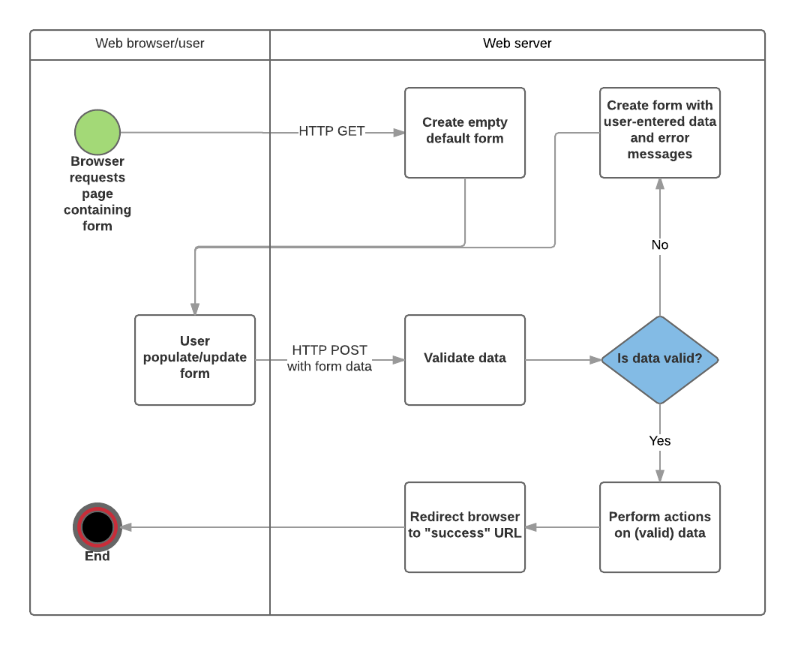

{{LearnSidebar}}{{PreviousMenuNext(“Learn/Server-side/Express_Nodejs/Displaying_data”, “Learn/Server-side/Express_Nodejs/deployment”, “Learn/Server-side/Express_Nodejs”)}}
In this tutorial we’ll show you how to work with HTML Forms in Express using Pug. In particular, we’ll discuss how to write forms to create, update, and delete documents from the site’s database.
| Prerequisites: | Complete all previous tutorial topics, including Express Tutorial Part 5: Displaying library data |
|---|---|
| Objective: | To understand how to write forms to get data from users, and update the database with this data. |
An HTML Form is a group of one or more fields/widgets on a web page that can be used to collect information from users for submission to a server. Forms are a flexible mechanism for collecting user input because there are suitable form inputs available for entering many different types of data—text boxes, checkboxes, radio buttons, date pickers, etc. Forms are also a relatively secure way of sharing data with the server, as they allow us to send data in POST requests with cross-site request forgery protection.
Working with forms can be complicated! Developers need to write HTML for the form, validate and properly sanitize entered data on the server (and possibly also in the browser), repost the form with error messages to inform users of any invalid fields, handle the data when it has successfully been submitted, and finally respond to the user in some way to indicate success.
In this tutorial, we’re going to show you how the above operations may be performed in Express. Along the way, we’ll extend the LocalLibrary website to allow users to create, edit and delete items from the library.
Note: We haven’t looked at how to restrict particular routes to authenticated or authorized users, so at this point, any user will be able to make changes to the database.
First a brief overview of HTML Forms. Consider a simple HTML form, with a single text field for entering the name of some “team”, and its associated label:
The form is defined in HTML as a collection of elements inside <form>...</form> tags, containing at least one input element of type="submit".
<form action="/team_name_url/" method="post">
<label for="team_name">Enter name: </label>
<input id="team_name" type="text" name="name_field" value="Default name for team.">
<input type="submit" value="OK">
</form>While here we have included just one (text) field for entering the team name, a form may contain any number of other input elements and their associated labels. The field’s type attribute defines what sort of widget will be displayed. The name and id of the field are used to identify the field in JavaScript/CSS/HTML, while value defines the initial value for the field when it is first displayed. The matching team label is specified using the label tag (see “Enter name” above), with a for field containing the id value of the associated input.
The submit input will be displayed as a button (by default)—this can be pressed by the user to upload the data contained by the other input elements to the server (in this case, just the team_name). The form attributes define the HTTP method used to send the data and the destination of the data on the server (action):
action: The resource/URL where data is to be sent for processing when the form is submitted. If this is not set (or set to an empty string), then the form will be submitted back to the current page URL.method: The HTTP method used to send the data: POST or GET.
POST method should always be used if the data is going to result in a change to the server’s database, because this can be made more resistant to cross-site forgery request attacks.GET method should only be used for forms that don’t change user data (e.g. a search form). It is recommended for when you want to be able to bookmark or share the URL.Form handling uses all of the same techniques that we learned for displaying information about our models: the route sends our request to a controller function which performs any database actions required, including reading data from the models, then generates and returns an HTML page. What makes things more complicated is that the server also needs to be able to process the data provided by the user, and redisplay the form with error information if there are any problems.
A process flowchart for processing form requests is shown below, starting with a request for a page containing a form (shown in green):
As shown in the diagram above, the main things that form handling code needs to do are:
Display the default form the first time it is requested by the user.
POST request.Once all actions are complete, redirect the user to another page.
Often form handling code is implemented using a GET route for the initial display of the form and a POST route to the same path for handling validation and processing of form data. This is the approach that will be used in this tutorial.
Express itself doesn’t provide any specific support for form handling operations, but it can use middleware to process POST and GET parameters from the form, and to validate/sanitize their values.
Before the data from a form is stored it must be validated and sanitized:
For this tutorial, we’ll be using the popular express-validator module to perform both validation and sanitization of our form data.
Install the module by running the following command in the root of the project.
Note: The express-validator guide on Github provides a good overview of the API. We recommend you read that to get an idea of all its capabilities (including using schema validation and creating custom validators). Below we cover just a subset that is useful for the LocalLibrary.
To use the validator in our controllers, we specify the particular functions we want to import from the express-validator module, as shown below:
There are many functions available, allowing you to check and sanitize data from request parameters, body, headers, cookies, etc., or all of them at once. For this tutorial, we’ll primarily be using body and validationResult (as “required” above).
The functions are defined as below:
body([fields, message]): Specifies a set of fields in the request body (a POST parameter) to validate and/or sanitise along with an optional error message that can be displayed if it fails the tests. The validation and sanitise criteria are daisy-chained to the body() method.
For example, the line below first defines that we’re checking the “name” field and that a validation error will set an error message “Empty name”. We then call the sanitization method trim() to remove whitespace from the start and end of the string, and then isLength() to check the resulting string isn’t empty. Finally, we call escape() to remove HTML characters from the variable that might be used in JavaScript cross-site scripting attacks.
This test checks that the age field is a valid date and uses optional() to specify that null and empty strings will not fail validation.
You can also daisy chain different validators, and add messages that are displayed if the preceding validators are true.
validationResult(req): Runs the validation, making errors available in the form of a validation result object. This is invoked in a separate callback, as shown below:
(req, res, next) => {
// Extract the validation errors from a request.
const errors = validationResult(req);
if (!errors.isEmpty()) {
// There are errors. Render form again with sanitized values/errors messages.
// Error messages can be returned in an array using `errors.array()`.
}
else {
// Data from form is valid.
}
}We use the validation result’s isEmpty() method to check if there were errors, and its array() method to get the set of error messages. See the Validation Result API for more information.
The validation and sanitization chains are middleware that should be passed to the Express route handler (we do this indirectly, via the controller). When the middleware runs, each validator/sanitizer is run in the order specified.
We’ll cover some real examples when we implement the LocalLibrary forms below.
Many of the models in the library are related/dependent—for example, a Book requires an Author, and may also have one or more Genres. This raises the question of how we should handle the case where a user wishes to:
Genre that is still being used by a Book).For this project we will simplify the implementation by stating that a form can only:
Author and Genre instances before attempting to create any Book objects).Book until all associated BookInstance objects have been deleted).Note: A more “robust” implementation might allow you to create the dependent objects when creating a new object, and delete any object at any time (for example, by deleting dependent objects, or by removing references to the deleted object from the database).
In order to implement our form handling code, we will need two routes that have the same URL pattern. The first (GET) route is used to display a new empty form for creating the object. The second route (POST) is used for validating data entered by the user, and then saving the information and redirecting to the detail page (if the data is valid) or redisplaying the form with errors (if the data is invalid).
We have already created the routes for all our model’s create pages in /routes/catalog.js (in a previous tutorial). For example, the genre routes are shown below:
// GET request for creating a Genre. NOTE This must come before route that displays Genre (uses id).
router.get('/genre/create', genre_controller.genre_create_get);
// POST request for creating Genre.
router.post('/genre/create', genre_controller.genre_create_post);The following sub articles will take us through the process of adding the required forms to our example application. You need to read and work through each one in turn, before moving on to the next one.
Genre objects.Author objects.Book objects.BookInstance objects.Author objects.Book objects.Implement the delete pages for the Book, BookInstance, and Genre models, linking them from the associated detail pages in the same way as our Author delete page. The pages should follow the same design approach:
A few tips:
Genre is just like deleting an Author as both objects are dependencies of Book (so in both cases you can delete the object only when the associated books are deleted).Book is also similar, but you need to check that there are no associated BookInstances.BookInstance is the easiest of all because there are no dependent objects. In this case, you can just find the associated record and delete it.Implement the update pages for the BookInstance, Author, and Genre models, linking them from the associated detail pages in the same way as our Book update page.
A few tips:
Author date of death and date of birth fields and the BookInstance due_date field are the wrong format to input into the date input field on the form (it requires data in form “YYYY-MM-DD”). The easiest way to get around this is to define a new virtual property for the dates that formats the dates appropriately, and then use this field in the associated view templates.Express, node, and third-party packages on NPM provide everything you need to add forms to your website. In this article, you’ve learned how to create forms using Pug, validate and sanitize input using express-validator, and add, delete, and modify records in the database.
You should now understand how to add basic forms and form-handling code to your own node websites!
{{PreviousMenuNext(“Learn/Server-side/Express_Nodejs/Displaying_data”, “Learn/Server-side/Express_Nodejs/deployment”, “Learn/Server-side/Express_Nodejs”)}}